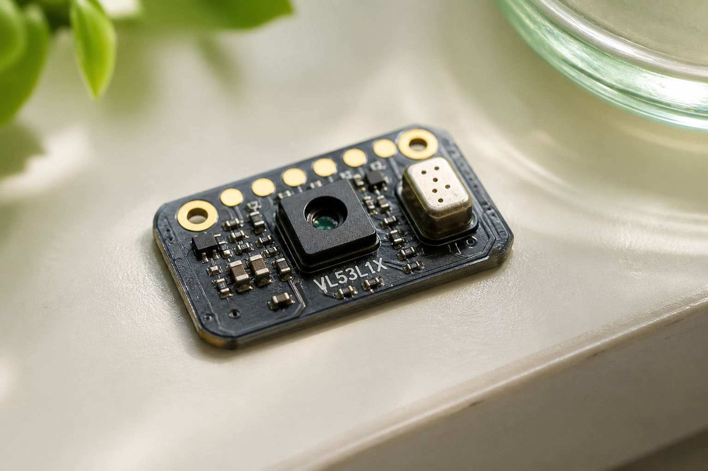

01
Time-of-flight
VL53L1X-class ranging. Typical 27° field, Class 1 emitter, up to 4 m from the manufacturer — RestGuard limits use to the 0.3–1.5 m visitor zone.
Wearable science / Multi-sensor
Presence, sound, and door state share one clock. The public ring only changes when the combined window says it should.

Functional integration
VL53L1X-class ranging. Typical 27° field, Class 1 emitter, up to 4 m from the manufacturer — RestGuard limits use to the 0.3–1.5 m visitor zone.
Digital I²S MEMS microphone. RMS minutes above a configured threshold. Never a certified meter. Never a recorder.
Magnetic door state. Cheap, reliable, and only as good as magnet alignment.
ESP32-S3 filters samples, expires events older than 30 minutes, applies hysteresis, updates ring and e-paper within 2 s.
Sensor science
A ToF sensor measures distance, not identity. RestGuard qualifies an approach only when a person enters the zone and stays for a minimum dwell. Glass, angle, and cover windows need site calibration. Reflections are a known risk, not a surprise.
Target · R1
Scripted approach trials. Pass-by false counts stay under 10%.
The capsule is compact and I²S-native. Firmware keeps short-window RMS summaries. No waveform, no speech, no cloud archive. Privacy is a requirement (R6), not a marketing line.
After calibration, state should follow a reference meter within ±3 dB-equivalent. The device is still not a legal sound-level meter.
Door events are weighted most heavily in the prototype score because opening the enclosure is a different class of disturbance than a quiet look. A 100-cycle fixture should capture ≥99 events.
Every second: read, filter, update dwell and sound timers, append qualified events, drop anything older than 30 minutes, calculate D, apply hysteresis, refresh the public state and the local summary. The system can enter amber at 11 and return to green only below 8.
Decision logic
P qualified approaches · O door-open events · A minutes above the sound threshold. Prototype formula, not a medical or welfare standard.
Score
7.0
0–10 green · 11–20 amber · >20 or staff override rest
Architecture